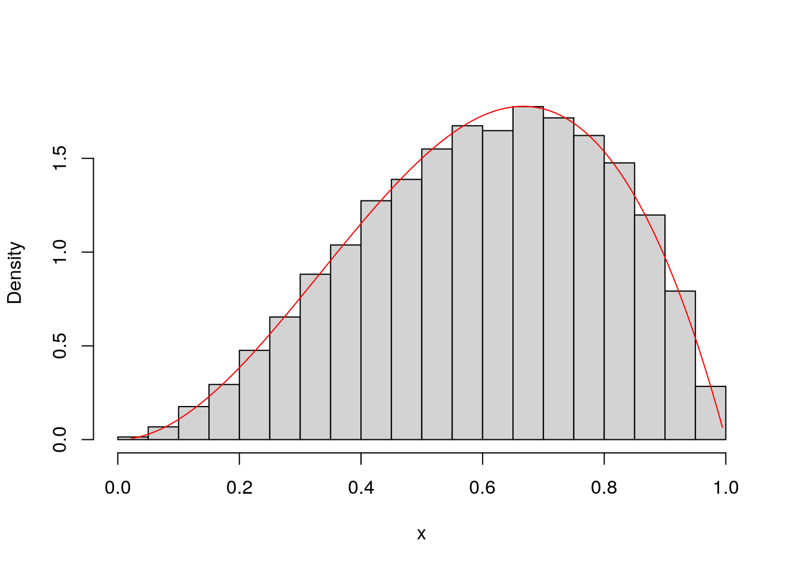
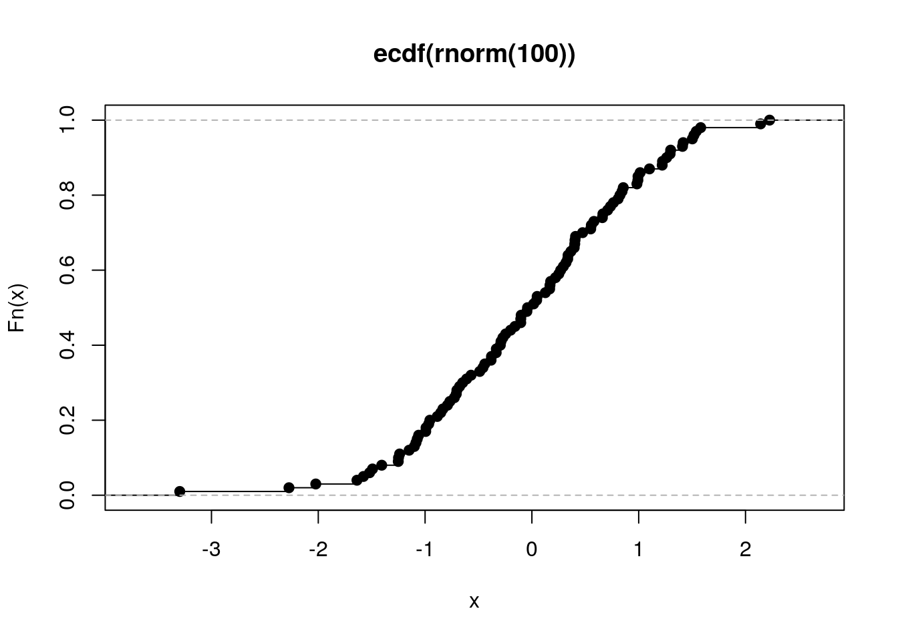

Chapter 3 Odds and Ends
TODO, this part organizes its teaching by concepts patterns commonly-found in data science. The components are types, and sometimes involve new functions.
3.1 Input and Output
3.1.1 General Input Considerations
So far we have been creating small pieces of data within our scripts. This is primarily for pedagogical purposes. In real life, we can have
- data read in from a data set saved on our machine’s hard drive (e.g.
my_data.csvorlog_file.txt), - data read in from a database (e.g. MySQL, PostgreSQL, etc.), or
- data created in a script (either deterministic or random).
I focus mostly on the first category in this section. Here are my reasons for doing so:
- text-files are more readily-available to students than databases,
- teaching the second category requires teaching SQL, and that would introduce conceptual overlap,
- the third category is programmatically self-explanatory.
The third reason does not imply data created by code is unimportant. For example, it is the most common approach to create data used in simulation studies. Authors writing statistical papers need to demonstrate that their techniques work on “nice” data: data simulated from a known data-generating process. In a simulation study, unlike in the “real-world,” you have access to the parameters generating your data, and you can examine data that might otherwise be unobserved or hidden. Further, with data from the real-world, there is no guarantee your model correctly matches the true model.
Can your code/technique/algorithm, at the very least, obtain parameter estimates that are “in-line” with the parameters your code is using to simulate data? Are forecasts or predictions obtained by your method accurate? These kinds of questions can often only be answered by simulating fake data. Programmatically, simulating data like this largely involves calling functions that we have seen before (e.g. rnorm() in R or np.random.choice() in Python). This may or may not involve setting a pseudorandom number seed, first, for reproducibility.
Also, benchmark data sets are often readily available through specialized function calls.
Even though this chapter is written to teach you how to read in files into R and Python, you should not expect that you will know how to read in all data sets after reading this section. For both R and Python, there are an enormous amount of functions, different functions have different return types, different functions are suited for different file types, many functions are spread across a plethora of third party libraries, and many of these functions have an enormous amount of arguments. You will probably not be able to memorize everything. In my very humble opinion, I doubt you should want to.
Instead, focus on developing your ability to identify and diagnose data input problems. Reading in a data set correctly is often a process of trial-and-error. After attempting to read in a data set, always check the following items. Many of these points were previously mentioned in section @(data-frames-in-r).
- The correct column separator was used, or the correct “fixed-width format” was expected. If mistakes are made, columns are going to be combined in weird ways, and often the wrong types are going to be used for pieces of data (e.g.
"2,3"instead of2and3.) Also, watch out for when separators are found inside data elements or column names. For example, sometimes it’s unclear whether people’s names in the “last, first” format can be stored in one or two columns. Also, text data might surprise you with unexpected spaces or other whitespace is a common separator. - The column names were parsed correctly. Column names should not be stored as data in R/Python. Functions should not expect column names when they don’t exist in the actual file.
- Empty space and metadata was ignored correctly. Empty space between column names and data shouldn’t be stored. Data descriptions are sometimes stored in the same file as the data itself, and that should be skipped over when it’s being read in. This can occur at the beginning of the file, and even at the end of the file.
- Type choice is performed correctly. Are letters stored as strings or as something else such as an R
factor? Are dates and times stored as a special date/time type, or as strings? Is missing data correctly identified? Sometimes data providers use outrageous numbers like \(-9999\) to represent missing data–don’t store that as a float or integer!
I realize that this is no small task. To make matters worse:
you can’t edit the raw data to suit your needs, to make it easier to read in. You have to work with what you’re given. If you were allowed to edit, say, a text file you downloaded onto your own machine, you shouldn’t–it will lead to code that doesn’t run anywhere else. If you abuse write privileges on your company’s database, say, well then that’s definitely going to be catastrophic.
Data sets are often quite large, so manually checking each element is often impossible. In this situation you will have to resign yourself to checking the top and bottom of a data set, or maybe anticipate a specific place where problems are likely to appear.
3.1.2 Reading in Text Files with R
You’ve seen examples of read.csv() used earlier in the book, so it should not surprise you that this is one of the most common ways to read in data in R. Another important function is read.table(). Actually, if you look at the source code for read.csv() (type the name of the function without parentheses into the console and press read.table(). The primary difference between these functions is default arguments. Mind the default arguments. Do not be completely averse to writing a long-line of code to read in a data set correctly. Or do, and choose the function with the best default arguments.
Consider the “Challenger USA Space Shuttle O-Ring Data Set” from (Dua and Graff 2017). The first ten rows looks like this.
6 0 66 50 1
6 1 70 50 2
6 0 69 50 3
6 0 68 50 4
6 0 67 50 5
6 0 72 50 6
6 0 73 100 7
6 0 70 100 8
6 1 57 200 9
6 1 63 200 10It does not use commas as separators, and there is no header information, so read.csv() used with its default arguments will produce an incorrect result. It will miss the first row by counting it as a column name, and store everything in one column with the wrong type.
d <- read.csv("data/o-ring-erosion-only.data")
head(d)
## X6.0.66..50..1
## 1 6 1 70 50 2
## 2 6 0 69 50 3
## 3 6 0 68 50 4
## 4 6 0 67 50 5
## 5 6 0 72 50 6
## 6 6 0 73 100 7
dim(d)
## [1] 22 1
typeof(d[,1])
## [1] "character"Specifying header=FALSE fixes the column name issue, but sep = " " does not fix the separator issue.
d <- read.csv("data/o-ring-erosion-only.data", header=FALSE, sep = " ")
head(d)
## V1 V2 V3 V4 V5 V6 V7
## 1 6 0 66 NA 50 NA 1
## 2 6 1 70 NA 50 NA 2
## 3 6 0 69 NA 50 NA 3
## 4 6 0 68 NA 50 NA 4
## 5 6 0 67 NA 50 NA 5
## 6 6 0 72 NA 50 NA 6
dim(d)
## [1] 23 7
str(d)
## 'data.frame': 23 obs. of 7 variables:
## $ V1: int 6 6 6 6 6 6 6 6 6 6 ...
## $ V2: int 0 1 0 0 0 0 0 0 1 1 ...
## $ V3: int 66 70 69 68 67 72 73 70 57 63 ...
## $ V4: int NA NA NA NA NA NA 100 100 200 200 ...
## $ V5: int 50 50 50 50 50 50 NA NA NA 10 ...
## $ V6: int NA NA NA NA NA NA 7 8 9 NA ...
## $ V7: int 1 2 3 4 5 6 NA NA NA NA ...One space is strictly one space. Some rows have two, though. After digging into the documentation a bit further, you will notice that "" works for “one or more spaces, tabs, newlines or carriage returns.” This is why read.table(), with its default arguments, works well.
d <- read.table("data/o-ring-erosion-only.data")
head(d)
## V1 V2 V3 V4 V5
## 1 6 0 66 50 1
## 2 6 1 70 50 2
## 3 6 0 69 50 3
## 4 6 0 68 50 4
## 5 6 0 67 50 5
## 6 6 0 72 50 6
dim(d)
## [1] 23 5
str(d)
## 'data.frame': 23 obs. of 5 variables:
## $ V1: int 6 6 6 6 6 6 6 6 6 6 ...
## $ V2: int 0 1 0 0 0 0 0 0 1 1 ...
## $ V3: int 66 70 69 68 67 72 73 70 57 63 ...
## $ V4: int 50 50 50 50 50 50 100 100 200 200 ...
## $ V5: int 1 2 3 4 5 6 7 8 9 10 ...This data set has columns whose widths are “fixed,” too. It is in “fixed width format” because any given column has all its elements take up a constant amount of characters. The third column has integers with two or three digits, but no matter what, each row has the same number of characters. The annoying thing about this method, though, is you have to specify what those widths are. This can be quite tedious if your data set has many columns and/or many rows. The upside though, is that the files can be a little bit smaller, because the data provider does not have to waste characters on separators.
d <- read.fwf("data/o-ring-erosion-only.data", widths = c(1,1,2,3,2), sep = "")
str(d)
## 'data.frame': 23 obs. of 4 variables:
## $ V1: int 6 6 6 6 6 6 6 6 6 6 ...
## $ V2: int 0 1 0 0 0 0 0 0 1 1 ...
## $ V3: int 66 70 69 68 67 72 73 70 57 63 ...
## $ V4: int 5 5 5 5 5 5 10 10 20 20 ...3.1.3 Reading in Text Files with Python
TODO
3.1.4 Output
After we have created something useful, we might be interested in storing our results. We can write out to a database, a text file, or we can save a digitized version of our work space.
3.2 Using Third-Party Code
Before using third-party code, it must first be installed. After it is installed, it must be “loaded in” to your session. I will describe both of these steps in R and Python.
3.2.1 Installing Packages In R
In R, there are thousands of user-created packages. You can download most of these from the Comprehensive R Archive Network. You can also download packages from other publishing platforms like Bioconductor, or Github. Installing from CRAN is more commonplace, and extremely easy to do. Just use the install.packages() function. This can be run inside your R console, so there is no need to type things into the command line.
install.packages("thePackage")3.2.2 Installing Packages In Python
In Python, installing packages is more complicated. Commands must be written in the command line, and there are multiple package managers. This isn’t surprising, because Python is used more extensively than R in fields other than data science.
If you followed the suggestions provided in 0.0.1, then you installed Anaconda. This means you will usually be using the conda command. Point-and-click interfaces are made available as well.
conda install the_packageThere are some packages that will not be available using this method. For more information on that situation, see here.
3.2.3 Loading Packages In R
After they are installed on your machine, third-party code will need to be “loaded” into your R or Python session.
Loading in a package is relatively simple in R, however complications can arise when different variables share the same name. This happens relatively often because
- it’s easy to create a variable in the global environment that has the same name as another object you don’t know about, and
- different packages you load in sometimes share names accidentally.
Starting off with the basics, here’s how to load in a package of third-party code. Just type the following into your R console.
library(thePackage)You can also use the require() function, which has slightly different behavior when the requested package is not found.
To understand this more deeply, we need to talk about environments again. We discussed these before in 2.5.3, but only in the context of user-defined functions. When we load in a package with library(), we make its contents available by putting it all in an environment for that package.
An environment holds the names of objects. There are usually several environments, and each holds a different set of functions and variables. All the variables you define are in an environment, every package you load in gets its own environment, and all the functions that come in R pre-loaded have their own environment.
Formally, each environment is pair of two things: a frame and an enclosure. The frame is the set of symbol-value pairs, and the enclosure is a pointer to the parent environment. If you’ve heard of a linked list in a computer science class, it’s the same thing.
Moreover, all of these environments are connected in a chain-like structure. To see what environments are loaded on your machine, and what order they were loaded in, use the search() function. This displays the search path, or the ordered sequence of all of your environments.
search()
## [1] ".GlobalEnv" "package:R6" "package:Matrix" "package:Hmisc" "package:ggplot2"
## [6] "package:Formula" "package:survival" "package:lattice" "package:reticulate" "tools:rstudio"
## [11] "package:stats" "package:graphics" "package:grDevices" "package:utils" "package:datasets"
## [16] "package:methods" "Autoloads" "package:base"Alternatively, if you’re using RStudio, the search path, and the contents of each of its environments, are displayed in the “Environment” window. You can choose which environment you’d like to look at by selecting it from the dropdown menu. This allows you to see all of the variables in that particular environment. The global environment (i.e. ".GlobalEnv") is displayed by default, because that is where you store all the objects you are creating in the console.

(#fig:rstudio_disp)The Environment Window in RStudio
When you call library(thePackage), the package has an environment created for it, and it is inserted between the global environment, and the most recently loaded package. When you want to access an object by name, R will first search the global environment, and then it will traverse the environments in the search path in order. These has a few important implications.
First, don’t define variables in the global environment that are already named in another environment. There are many variables that come pre-loaded in the
basepackage (to see them, typels("package:base")), and if you like using a lot of packages, you’re increasing the number of names you should avoid using.Second, don’t
libraryin a package unless you need it, and if you do, be aware of all the names it will mask it packages you loaded in before. The good news is thatlibrarywill often print warnings letting you know which names have been masked. The bad news is that it’s somewhat out of your control–if you need two packages, then they might have a shared name, and the only thing you can do about it is watch the ordering you load them in.Third, don’t use
library()inside code that issource’d in other files. For example, if you attach a package to the search path from within a function you defined, anybody that uses your function loses control over the order of packages that get attached.
All is not lost if there is a name conflict. The variables haven’t disappeared. It’s just slightly more difficult to refer to them. For instance, if I load in Hmisc (TODO cite), I get the warning warning that format.pval and units are now masked because they were names that were in "package:base". I can still refer to these masked variables with the double colon operator (::).
library(Hmisc)
# format.pval refers to Hmisc's format.pval because it was loaded more recently
# Hmisc::format.pval in this case is the same as above
# base::format.pval this is the only way you can get base's format.pval function3.2.4 Loading Packages In Python
In Python, you use the import statement to access objects defined in another file. It is slightly more complicated than R’s library() function, but it is also more flexible. To make the contents of a package called, say, the_package available, type one of the following inside a Python session.
import the_package
import the_package as tp
from the_package import *To describe the difference between these three approaches, as well as to highlight the important takeaways and compare them with the important takeaways in the last section, we need to discuss what a Python module is, what a package is, and what a Python namespace is.8
A Python
moduleis a separate (when I say separate, I mean separate from the script file you’re currently editing).pyfile with function and/or object definitions in it.9A namespace is “a mapping from names to objects.”
With these definitions, we can define importing. According to the Python documentation, “[t]he import statement combines two operations; it searches for the named module, then it binds the results of that search to a name in the local scope.”
The sequence of places Python looks for a module is called the search path. This is not the same as R’s search path, though. In Python, the search path is a list of places to look for modules, not a list of places to look for variables. To see it, import sys, then type sys.path.
After a module is found, the variable names in the found module become available in the importing module. These variables are available in the global scope, but the names you use to access them will depend on what kind of import statement you used. From there, you are using the same scoping rules that we described in 2.5.6, which means the LEGB acronym still applies.
Here are a few important takeaways that might not be readily apparent:
Python namespaces are unlike R environments in that they are not arranged into a sorted list.
Unlike in R, there is no masking, and you don’t have to worry about the order of
importing things.However, you do have to worry about how you’re
importing things. If you use thefrom the_package import thingone, thingtwoformat ofimporting, you are at risk of re-assigning eitherthingoneorthingtwo, if they already exist. As a rule of thumb, you should never use this form ofimporting.These differences might explain why Python packages tend to be larger than R packages.
3.2.4.1 importing Examples
In the example below, we import the entire numpy package in a way that lets us refer to it as np. This reduces the amount of typing that is required of us, but it also protects against variable name clashing. We then use the normal() function to simulate normal random variables. This function is in the random sub-module, which is a sub-module in numpy that collects all of the pseudorandom number generation functionality together.
import numpy as np # import all of numpy
np.random.normal(size=10)
## array([-0.43470654, 0.76317493, 1.95841842, 0.23100683, 0.80322106,
## 0.48999706, -0.13298039, -1.67763274, -1.21883617, 0.4768533 ])This is one use of the dot operator (.). It is also used to access attributes and methods of objects (more information on that will come later in chapter 4). normal is inside of random, which it itself inside of np.
As a second example, suppose we were interested in the stats sub-module found inside the scipy package. We could import all of scipy, but just like the above example, that would mean we would need to consistently refer to a variable’s module, the sub-module, and the variable name. For long programs, this can become tedious if we had to type scipy.stats.norm over and over again. Instead, let’s import the sub-module (or sub-package) and ignore the rest of scipy.
from scipy import stats
stats.norm().rvs(size=10)
## array([-0.64473797, -1.53878565, -0.27133171, 1.30101864, 0.65618805,
## 2.83726236, 0.41085974, 0.74220464, 1.10136788, 1.3898626 ])So we don’t have to type scipy every time we use something in scipy.stats.
Finally, we can import the function directly, and refer to it with only one letter. This is highly discouraged, though. We are much more likely to accidentally use the name n twice. Further, n is not a very descriptive name, which means it could be difficult to understand what your program is doing later.
from numpy.random import normal as n
n(size=10)
## array([-0.43970432, 0.31564009, -1.64666973, -1.35459129, 1.74220327,
## -1.49067142, -0.48975257, -0.20603022, 1.72179658, -0.75993415])Keep in mind, you’re always at risk of accidentally re-using names, even if you aren’t importing anything. For example, consider the following code.
# don't do this!
sum = 3This is very bad, because now you cannot use the sum function that was named in the built-in module. To see what is in your built in module, type the following into your Python interpreter: dir(__builtins__).
3.3 Control Flow
3.3.1 Conditional Logic
We discussed Boolean objects in 2.1. We used these for
- counting up number of times a condition appeared, and
- subsetting.
Another way to use them is to conditionally execute code, depending on whether or truth condition of a Boolean.
In R,
myName <- "Clare"
if(myName != "Taylor"){
print("you are not Taylor")
}
## [1] "you are not Taylor"In Python, you don’t need curly braces, but the indentation needs to be just right, and you need a colon.
my_name = "Taylor"
if my_name == "Taylor":
print("hi Taylor")
## hi TaylorThere can be more than one truth test. To test alternative Boolean conditions, you can add one or more else if (in R) or elif (in Python) blocks. The first block with a Boolean that is found to be true will execute, and none of the resulting conditions will be checked.
If no if block or else if/elif block executes, an else block will always execute. That’s why else blocks don’t need to look at a Boolean. Whether they execute only depends on the Booleans in the previous blocks.
food <- "muffin"
if(food == "apple"){
print("an apple a day keeps the doctor away")
}else if(food == "muffin"){
print("muffins have a lot of sugar in them")
}else{
print("neither an apple nor a muffin")
}
## [1] "muffins have a lot of sugar in them"my_num = 42.999
if my_num % 2 == 0:
print("my_num is even")
elif my_num % 2 == 1:
my_num += 1
print("my_num was made even")
else:
print("you're cheating by not using integers!")
## you're cheating by not using integers!3.3.2 Loops
One line of code generally does one “thing,” unless you’re using loops. Code written inside a loop will execute many times.
The most common loop for us will be a for loop. A simple for loop in R might look like this
myLength <- 9
r <- vector(mode = "numeric", length = myLength)
for(i in seq_len(myLength)){
r[i] <- i
}
r
## [1] 1 2 3 4 5 6 7 8 9seq_len(myLength)gives us avectoriis a variable that takes on the values found in thevector- Code inside the loop (inside the curly braces), is repeatedly executed, and it may or may not reference the dynamic variable
i
my_length = 9
r = []
for i in range(my_length):
r.append(i)
r
## [0, 1, 2, 3, 4, 5, 6, 7, 8]- Unsurprisingly, Python’s syntax opts for indentation and colons instead of curly braces and parentheses,
- Code inside the loop (inside the curly braces), is repeatedly executed, and it may or may not reference the dynamic variable
i forloops in Python are more flexible because they iterate over many different types of data structures,- The
rangedoesn’t generate all the numbers in the sequence at once, so it saves on memory. This can be quite useful for certain applications. However,ris a list that does store all the consecutive integers.
Loop tips:
- If you find yourself copy/paste-ing code, changing only a small portion of text on each line of code, you should consider using a loop,
-
If a
forloop works for something you are trying to do, first try to find a replacement function that does what you want. The examples above just made avector/listof consecutive integers. There are many built in functions that accomplish this. Avoiding loops in this case would make your program shorter, easier to read, and (potentially) much faster. - A third option between looping, and a built-in function, is to try the functional approach. This will be explained more in the last chapter.
-
Watch out for off-by-one errors. Iterating over the wrong sequence is a common mistake, considering
- Python starts counting from \(0\), while R starts counting from \(1\)
-
sometimes iteration
ireferences thei-1th element of a container -
The behavior of loops is sometimes more difficult to understand if they’re using
breakorcontinue/nextstatements
- Don’t hardcode variables. Minimize the number of places you have to make changes to your code. You will change your code consistently, so save your future self some time.
The last point bears repeating: don’t hardcode variables. In statistical programs, there are often “tuning parameters,” for instance that must be changed frequently to affect the overall behavior of the program. If these variables only need to be changed in one location, that saves you a lot of time and gives you more flexibility.
In the example above, the myLength or my_length variable could be referenced in many places throughout the entire program. If you wanted to change the number of iterations in your program (which happens all the time), and you did hardcode the length in a bunch of places throughout the program, you would need to hunt down all those changes!
Python provides an alternative way to construct lists similar to the one we constructed in the above example. They are called list comprehensions. You can incorporate iteration and conditional logic in one line of code.
[3*i for i in range(10) if i%2 == 0]
## [0, 6, 12, 18, 24]You might also have a look at generator expressions and dictionary comprehensions.
R can come close to replicating the above behavior with vectorization, but the conditional part is hard to achieve without subsetting.
3*seq(0,9)[seq(0,9)%%2 == 0]
## [1] 0 6 12 18 243.3.3 A Longer Example
3.3.3.1 Description of Accept-Reject Sampling
An example of an algorithm that uses conditional logic is the accept-reject sampling method (Robert and Casella 2005). This is useful for when we want to sample from a target probability density \(p(x)\), using another distribution called a proposal ditribution \(q(x)\).
\(q(x)\) is probably a distribution that is easy to sample from and is easy to evaluate pointwise. For example, a uniform distribution satisfies these criteria because both R and Python have functions that accomplish these two things (e.g. sampling can be done with runif in R and np.random.uniform in Python). \(p(x)\) is generally more “complicated.” If it wasn’t, we would try to find some built-in function for it.
One common way a distribution can be complicated is that it can have an unknown normalizing constant–one that is difficult or impossible to solve using calculus. This happens a lot in Bayesian Statistics, for example.11. We might write down \[ p(x) = \frac{f(x)}{\int f(x) dx}, \] and this is guaranteed to be a probability density function as long as \(f(x) \ge 0\) and \(\int f(x) dx < \infty\), but we might have no idea how to solve the denominator. In this case, \(f(x)\) is easy to evaluate pointwise, but \(p(x)\) is not.
This algorithm makes use of an auxiliary random variable that is sampled from a \(\text{Bernoulli}(p)\) distribution. As long as \(0 < p < 1\), a Bernoulli random variable \(Y\) is either \(0\) or \(1\). The probability it takes the value \(1\) is \(p\), while the probability that it takes the value \(0\) is \(1-p\). A coin flip is a good example use-case for this distribution. Coin flips are commonly assumed to be distributed as\(\text{Bernoulli}(.5)\). At least for fair coins, there is an equal chance that the coin lands heads (i.e. \(0\)) or tails (i.e. \(1\)).
The most difficult part about using this algorithm is that one must calculate the probability parameter of this Bernoulli random variable. This involves calculating (by hand) an upper bound \(M\) for the ratio \(f(x) / q(x)\). This bound has to hold uniformly, meaning that it is a constant number that is greater than the ratio no matter what \(x\) we plug in.
Below is one step of the accept-reject algorithm.
Algorithm 1: Accept-Reject Sampling (One Step)
- Calculate \(M > \frac{f(x)}{q(x)}\) (the smaller the better)
- Sample \(X\) from \(q(x)\)
- Sample \(Y \mid X\) from \(\text{Bernoulli}\left(\frac{f(X)}{q(X)M}\right)\)
- If \(Y = 1\), then return \(X\)
- Otherwise, return nothing
Multiple samples will be required, so this process needs to be iterated many times. There are two ways to do this. If you want to iterate a fixed number of times, you can use a for loop. However, in that case, you will end up with a random number of samples. On the other hand, if you want a nonrandom number of samples, you will probably want a while loop. This is the approach the example below takes. The while loop will continue iterating until a condition is false. In our case, we want to loop until we receive the total number of samples we requested.
3.3.3.2 A Specific Example
Here is a specific example. Let’s say our target12 is \[ p(x) = \begin{cases} \frac{x^2(1-x)}{\int_0^1 x^2(1-x) dx} & 0 < x < 1 \\ 0 & \text{otherwise} \end{cases}. \] The denominator, \(\int_0^1 x^2(1-x) dx\), is the target’s normalizing constant. You might know how to solve this integral, but let’s pretend for the sake of our example that it’s too difficult for us. We want to sample from \(p(x)\) while only being able to evaluate (not sample) from its normalized version.
Next, let’s choose a uniform distribution for our proposal distribution: \[ q(x) = \begin{cases} 1 & 0 < x < 1 \\ 0 & \text{otherwise} \end{cases} \] We can plot all three functions.

Here’s some Python code that attempts to sample once from \(p(x)\). Sometimes proposals are not accepted. When that happens, the function returns None.
import numpy as np
def f(samp):
"""the unnormalized density"""
return (1-samp)*(samp**2)
def attempt_one_samp():
"""attempts to sample from target distribution, using uniform as a proposal"""
x = np.random.uniform()
M = 4/27
bern_prob_param = f(x)/M
accept = np.random.binomial(1, bern_prob_param) == 1
if accept:
return xdef sample_from_target(num_times):
"""sample num_times from the target distribution"""
samps = []
while len(samps) < num_times:
potential_samp = attempt_one_samp()
if potential_samp is not None:
samps.append(potential_samp)
return samps- we used a
whileloop instead of aforloop because we did not know how many iterations it would take to getnum_timessamples - We are following the Python style guide and using the
is notkeyword to check if something isNone
In chapter 3.5, we’ll show you the code that you can use to generate the plot below. 
3.4 Reshaping and Combining Data Sets
3.4.1 Ordering and Sorting Data
Sorting a data set, in ascending order, say, is a common task. You might need to do it because
- ordering and ranking is commonly done in nonparametric statistics,
- you want to inspect the most “extreme” observations in a data set,
- it’s a pre-processing step before generating visualizations.
In R, it all starts with vectors. There are two common functions you should know: sort and order. sort returns the sorted data, while order returns the order indexes.
sillyData <- rnorm(5)
print(sillyData)
## [1] -0.07391173 -2.18115672 -1.09934716 -0.58404057 1.72783437
sort(sillyData)
## [1] -2.18115672 -1.09934716 -0.58404057 -0.07391173 1.72783437
order(sillyData)
## [1] 2 3 4 1 5order is useful if you’re sorting a data frame by a particularly column. Below, we inspect the top 5 most expensive cars. Notice that we need to clean up the MSRP (a character vector) a little first. We use the function gsub to find patterns in the text, and replace them with the empty string.
carData <- read.csv("data/cars.csv")
noDollarSignMSRP <- gsub("$", "", carData$MSRP, fixed = TRUE)
carData$cleanMSRP <- as.numeric(gsub(",", "", noDollarSignMSRP, fixed = TRUE))
rowIndices <- order(carData$cleanMSRP, decreasing = TRUE)[1:5]
carData[rowIndices,c("Make", "Model", "MSRP", "cleanMSRP")]## Make Model MSRP cleanMSRP
## 335 Porsche 911 GT2 2dr $192,465 192465
## 263 Mercedes-Benz CL600 2dr $128,420 128420
## 272 Mercedes-Benz SL600 convertible 2dr $126,670 126670
## 271 Mercedes-Benz SL55 AMG 2dr $121,770 121770
## 262 Mercedes-Benz CL500 2dr $94,820 94820In Python, Numpy has np.argsort and np.sort.
import numpy as np
silly_data = np.random.normal(size=5)
print(silly_data)
## [ 0.03803622 -0.88508168 0.64271529 0.68147948 -0.01781817]
np.sort(silly_data)
## array([-0.88508168, -0.01781817, 0.03803622, 0.64271529, 0.68147948])
np.argsort(silly_data)
## array([1, 4, 0, 2, 3])For pandas’ DataFrames, most of the functions I find useful are methods attached to the DataFrame class. That means that, as long as something is inside a DataFrame, you can use dot notation.
import pandas as pd
car_data = pd.read_csv("data/cars.csv")
car_data['no_dlr_msrp'] = car_data['MSRP'].str.replace("$", "", regex = False)
car_data['clean_MSRP'] = car_data['no_dlr_msrp'].str.replace(",","").astype(float)
car_data = car_data.sort_values(by='clean_MSRP', ascending = False)
car_data[["Make", "Model", "MSRP", "clean_MSRP"]].head(5)
## Make Model MSRP clean_MSRP
## 334 Porsche 911 GT2 2dr $192,465 192465.0
## 262 Mercedes-Benz CL600 2dr $128,420 128420.0
## 271 Mercedes-Benz SL600 convertible 2dr $126,670 126670.0
## 270 Mercedes-Benz SL55 AMG 2dr $121,770 121770.0
## 261 Mercedes-Benz CL500 2dr $94,820 94820.0pandas’ DataFrames and Series have a replace method. We use this to remove dollar signs and commas from the MSRP column. Note that we had to access the .str attribute of the Series column before we used it. After the string was processed, we converted it to a Series of floats with the astype method.
Finally, sorting the overall data frame could have been done with the same approach as the code we used in R (i.e. raw subsetting by row indexes), but there is a built in method called sort_values that will do it for us.
3.4.2 Stacking Data Sets and Placing them Shoulder to Shoulder
Stacking data sets on top of each other is a common task. You might need to do it if
- you need to add new a new row (or many rows) to a data frame,
- you need to recombine data sets (e.g. recombine a train/test split), or
- you’re creating a matrix in a step-by-step way.
In R, this can be done with rbind (short for “row bind”)
realEstate <- read.csv("data/albemarle_real_estate.csv")
train <- realEstate[-1,]
test <- realEstate[1,]
head(rbind(test, train))
## YearBuilt YearRemodeled Condition NumStories FinSqFt Bedroom FullBath HalfBath TotalRooms LotSize TotalValue
## 1 2006 0 Average 1.00 1922 3 3 0 10 5.000 409900
## 2 2003 0 Average 1.00 1848 3 2 0 7 61.189 523100
## 3 1972 0 Average 1.00 1248 2 1 0 4 1.760 180900
## 4 1998 0 Good 1.00 1244 1 1 0 3 50.648 620700
## 5 1886 0 Average 1.86 1861 4 1 0 6 3.880 162500
## 6 1910 0 Fair 1.53 1108 3 1 0 6 8.838 167200
## City
## 1 CROZET
## 2 CROZET
## 3 EARLYSVILLE
## 4 CROZET
## 5 CROZET
## 6 CROZET
sum(rbind(test, train) != realEstate)
## [1] 0The above example was with data.frames. This example of rbind is with matrix objects.
rbind(matrix(1,nrow = 2, ncol = 3),
matrix(2,nrow = 2, ncol = 3))
## [,1] [,2] [,3]
## [1,] 1 1 1
## [2,] 1 1 1
## [3,] 2 2 2
## [4,] 2 2 2In Python, you can stack data frames with pd.concat. It has a lot of options, so feel free to peruse those. You can also replace the call to pd.concat below with test.append(train).
import pandas as pd
real_estate = pd.read_csv("data/albemarle_real_estate.csv")
train = real_estate.iloc[1:,]
test = real_estate.iloc[[0],] # need the extra brackets!
pd.concat([test,train], axis=0).head() # also
## YearBuilt YearRemodeled Condition ... LotSize TotalValue City
## 0 2006 0 Average ... 5.000 409900 CROZET
## 1 2003 0 Average ... 61.189 523100 CROZET
## 2 1972 0 Average ... 1.760 180900 EARLYSVILLE
## 3 1998 0 Good ... 50.648 620700 CROZET
## 4 1886 0 Average ... 3.880 162500 CROZET
##
## [5 rows x 12 columns]
(pd.concat([test,train], axis=0) != real_estate).sum().sum()
## 0Take note of the extra square brackets when we create test. If you use real_estate.iloc[0,] instead, it will return a Series with all the elements coerced to the same type, and this won’t pd.concat properly with the rest of the data!
3.4.3 Merging or Joining Data Sets
If you have two different data sets that provide different information about the same things, you put them together using a merge (aka join) statement. The resulting data set is wider, and possibly with fewer rows. In R, you can use the merge function. In Python, you can use the merge method.
Suppose you have to sets of supposedly anonymized data about individual accounts on some online platforms.
baby1 <- read.csv("data/baby1.csv", stringsAsFactors = FALSE)
baby2 <- read.csv("data/baby2.csv", stringsAsFactors = FALSE)
head(baby1)
## idnum height.inches. email_address
## 1 1 74 fakeemail123@gmail.com
## 2 3 66 anotherfake@gmail.com
## 3 4 62 notreal@gmail.com
## 4 23 62 notreal@gmail.com
head(baby2)
## idnum phone email
## 1 3901283 5051234567 notreal@gmail.com
## 2 41823 5051234568 notrealeither@gmail.com
## 3 7198273 5051234568 anotherfake@gmail.comThe first thing you need to ask yourself is “which column is the unique identifier that is shared between these two data sets?” In our case, they both have an “identification number” column, could that be it? Let’s suppose for the sake of argument that these two data sets are coming from different online platforms, and these two places use different schemes to number their users.
In this case, they both share a column with (possibly) the same information about email addresses. They are named differently in each data set, so we must specify both column names.
# in R
merge(baby1, baby2, by.x = "email_address", by.y = "email")
## email_address idnum.x height.inches. idnum.y phone
## 1 anotherfake@gmail.com 3 66 7198273 5051234568
## 2 notreal@gmail.com 4 62 3901283 5051234567
## 3 notreal@gmail.com 23 62 3901283 5051234567In Python, merge is a method attached to each DataFrame instance.
# in Python
baby1.merge(baby2, left_on = "email_address", right_on = "email")
## idnum_x height(inches) ... phone email
## 0 3 66 ... 5051234568 anotherfake@gmail.com
## 1 4 62 ... 5051234567 notreal@gmail.com
## 2 23 62 ... 5051234567 notreal@gmail.com
##
## [3 rows x 6 columns]The email addresses anotherfake@gmail.com and notreal@gmail.com exist in both data sets, so each of these email addresses will end up in the result data frame. The rows in the result data set are wider and have more attributes for each individual.
Notice the duplicate email address, too. In this case, either the user signed up for two accounts using the same email, or one person signed up for an account with another person’s email address. In the case of duplicates, both rows will match with the same rows in the other data frame.
Also, in this case, all email addresses that weren’t found in both data sets were thrown away. This does not necessarily need to be the intended behavior. For instance, if we wanted to make sure no rows were thrown away, that would be possible. In this case, though, for email addresses that weren’t found in both data sets, some information will be missing. Recall that Python and R handle missing data differently (see 2.2.9).
# in R
merge(baby1, baby2,
by.x = "email_address", by.y = "email",
all.x = TRUE, all.y = TRUE)
## email_address idnum.x height.inches. idnum.y phone
## 1 anotherfake@gmail.com 3 66 7198273 5051234568
## 2 fakeemail123@gmail.com 1 74 NA NA
## 3 notreal@gmail.com 4 62 3901283 5051234567
## 4 notreal@gmail.com 23 62 3901283 5051234567
## 5 notrealeither@gmail.com NA NA 41823 5051234568# in Python
baby1.merge(baby2,
left_on = "email_address", right_on = "email",
how = "outer")
## idnum_x height(inches) ... phone email
## 0 1.0 74.0 ... NaN NaN
## 1 3.0 66.0 ... 5.051235e+09 anotherfake@gmail.com
## 2 4.0 62.0 ... 5.051235e+09 notreal@gmail.com
## 3 23.0 62.0 ... 5.051235e+09 notreal@gmail.com
## 4 NaN NaN ... 5.051235e+09 notrealeither@gmail.com
##
## [5 rows x 6 columns]You can see it’s slightly more concise in Python. If you are familiar with SQL, you might have heard of inner and outer joins. This is where pandas takes some of its argument names from.
3.4.4 Long Versus Wide Data
3.4.4.1 Long Versus Wide in R
Many types of data can be stored in either a wide or long format.
The classical example is data from a longitudinal study. If an experimental unit (in the example below a person) is repeatedly measured over time, each row would correspond to an experimental unit and an observation time in a data set in a long form.
fake_long_data1 <- data.frame(person = c("Taylor","Taylor","Charlie","Charlie"),
timeObserved = c(1, 2, 1, 2),
nums = c(100,101,300,301))
fake_long_data1
## person timeObserved nums
## 1 Taylor 1 100
## 2 Taylor 2 101
## 3 Charlie 1 300
## 4 Charlie 2 301A long format can also be used if you have multiple observations (at a single time point) on an experimental unit. Here is another example.
fake_long_data2 <- data.frame(person = c("Taylor", "Taylor", "Charlie","Charlie"),
attributeName = c("attrA","attrB","attrA","attrB"),
nums = c(100,101,300,301))
fake_long_data2
## person attributeName nums
## 1 Taylor attrA 100
## 2 Taylor attrB 101
## 3 Charlie attrA 300
## 4 Charlie attrB 301If you would like to reshape the long data sets into a wide format, you can use the reshape function. You will need to specify which columns correspond with the experimental unit, and which column is the “factor” variable.
fake_wide_data1 <- reshape(fake_long_data1,
direction = "wide",
timevar = "timeObserved",
idvar = "person",
varying = c("before","after")) # col names in new data set
fake_long_data1
## person timeObserved nums
## 1 Taylor 1 100
## 2 Taylor 2 101
## 3 Charlie 1 300
## 4 Charlie 2 301
fake_wide_data1
## person before after
## 1 Taylor 100 101
## 3 Charlie 300 301fake_wide_data2 <- reshape(fake_long_data2,
direction = "wide",
timevar = "attributeName", # timevar is kind of a misnomer here
idvar = "person",
varying = c("attribute A","attribute B"))
fake_long_data2
## person attributeName nums
## 1 Taylor attrA 100
## 2 Taylor attrB 101
## 3 Charlie attrA 300
## 4 Charlie attrB 301
fake_wide_data2
## person attribute A attribute B
## 1 Taylor 100 101
## 3 Charlie 300 301reshape will also go in the other direction: it can take wide data and convert it into long data
reshape(fake_wide_data1,
direction = "long",
idvar = "person",
varying = list(c("before","after")),
v.names = "nums")
## person time nums
## Taylor.1 Taylor 1 100
## Charlie.1 Charlie 1 300
## Taylor.2 Taylor 2 101
## Charlie.2 Charlie 2 301
fake_long_data1
## person timeObserved nums
## 1 Taylor 1 100
## 2 Taylor 2 101
## 3 Charlie 1 300
## 4 Charlie 2 301
reshape(fake_wide_data2,
direction = "long",
idvar = "person",
varying = list(c("attribute A","attribute B")),
v.names = "nums")
## person time nums
## Taylor.1 Taylor 1 100
## Charlie.1 Charlie 1 300
## Taylor.2 Taylor 2 101
## Charlie.2 Charlie 2 301
fake_long_data2
## person attributeName nums
## 1 Taylor attrA 100
## 2 Taylor attrB 101
## 3 Charlie attrA 300
## 4 Charlie attrB 3013.4.4.2 Long Versus Wide in Python
With pandas, we can take make wide data long with pd.DataFrame.pivot, and we can go in the other direction with pd.DataFrame.melt.
When going from wide to long, make sure to use the pd.DataFrame.reset_index() method afterwards to reshape the data and remove the index. Here is an example similar to the one above.
import pandas as pd
fake_long_data1 = pd.DataFrame({'person' : ["Taylor","Taylor","Charlie","Charlie"],
'time_observed' : [1, 2, 1, 2],
'nums' : [100,101,300,301]})
fake_long_data1
## person time_observed nums
## 0 Taylor 1 100
## 1 Taylor 2 101
## 2 Charlie 1 300
## 3 Charlie 2 301
pivot_data1 = fake_long_data1.pivot(index='person', columns='time_observed', values='nums')
pivot_data1
## time_observed 1 2
## person
## Charlie 300 301
## Taylor 100 101
fake_wide_data1 = pivot_data1.reset_index()
fake_wide_data1
## time_observed person 1 2
## 0 Charlie 300 301
## 1 Taylor 100 101Here’s one more example showing the same functionality–going fom wide to long format.
fake_long_data2 = pd.DataFrame({'person' : ["Taylor","Taylor","Charlie","Charlie"],
'attribute_name' : ['attrA', 'attrB', 'attrA', 'attrB'],
'nums' : [100,101,300,301]})
fake_wide_data2 = fake_long_data2.pivot(index='person',
columns='attribute_name',
values='nums').reset_index()
fake_wide_data2
## attribute_name person attrA attrB
## 0 Charlie 300 301
## 1 Taylor 100 101Here are some examples of going in the other direction: from wide to long with pd.DataFrame.melt. The first example specifies value columns by integers.
fake_wide_data1
## time_observed person 1 2
## 0 Charlie 300 301
## 1 Taylor 100 101
fake_wide_data1.melt(id_vars = "person", value_vars = [1,2])
## person time_observed value
## 0 Charlie 1 300
## 1 Taylor 1 100
## 2 Charlie 2 301
## 3 Taylor 2 101The second example uses strings to specify value columns.
fake_wide_data2
## attribute_name person attrA attrB
## 0 Charlie 300 301
## 1 Taylor 100 101
fake_wide_data2.melt(id_vars = "person", value_vars = ['attrA','attrB'])
## person attribute_name value
## 0 Charlie attrA 300
## 1 Taylor attrA 100
## 2 Charlie attrB 301
## 3 Taylor attrB 1013.5 Visualization
I describe a few plotting paradigms in R and Python below. Note that these descriptions are extremely thin. More depth could easily turn any of these subsections into an entire textbook!
3.5.1 Base R Plotting
R comes with some built-in functions plot, hist, boxplot, etc. Many of these reside in package:graphics, which comes pre-loaded into the search path. plot on the other hand, is higher up the search path in package:base–it is a generic method whose methods might be in package:graphics or some place else.
Base plotting covers most needs, so that’s what we spend most time with. However, there are a large number of third-party libraries for plotting that you might consider looking into if you want to follow a certain aesthetic, or if you want plotting specialized for certain cases (e.g. geospatial plots).
Recall our Albemarle Real Estate data set.
df <- read.csv("data/albemarle_real_estate.csv")
head(df)
## YearBuilt YearRemodeled Condition NumStories FinSqFt Bedroom FullBath HalfBath TotalRooms LotSize TotalValue
## 1 2006 0 Average 1.00 1922 3 3 0 10 5.000 409900
## 2 2003 0 Average 1.00 1848 3 2 0 7 61.189 523100
## 3 1972 0 Average 1.00 1248 2 1 0 4 1.760 180900
## 4 1998 0 Good 1.00 1244 1 1 0 3 50.648 620700
## 5 1886 0 Average 1.86 1861 4 1 0 6 3.880 162500
## 6 1910 0 Fair 1.53 1108 3 1 0 6 8.838 167200
## City
## 1 CROZET
## 2 CROZET
## 3 EARLYSVILLE
## 4 CROZET
## 5 CROZET
## 6 CROZETIf we wanted to get a general idea of how expensive homes were in Albemarle County, we could use a histogram. This helps us visualize a univariate numerical variable/column. Below I plot the (natural) logarithm of home prices.
hist(log(df$TotalValue),
xlab = "natural logarithm of home price", main = "Super-Duper Plot!")
I specified the xlab= and main= arguments, but there are many more that could be tweaked. Make sure to skim the options in the documentation (?hist).
plot is useful for plotting two univariate numerical variables. This can be done in time series plots (variable versus time) and scatter plots (one variable versus another).
par(mfrow=c(1,2))
plot(df$TotalValue, df$LotSize,
xlab = "total value ($)", ylab = "lot size (sq. ft.)",
pch = 3, col = "red", type = "b")
plot(log(df$TotalValue), log(df$LotSize),
xlab = "log. total value", ylab = "log. lot size",
pch = 2, col = "blue", type = "p")
abline(h = log(mean(df$LotSize)), col = "green")
par(mfrow=c(1,1))I use some of the many arguments available (type ?plot). xlab= and ylab= specify the x- and y-axis labels, respectively. col= is short for “color.” pch= is short for “point character.” Changing this will change the symbol shapes used for each point. type= is more general than that, but it is related. I typically use it to specify whether or not I want the points connected with lines.
I also use a couple other functions. abline is used to superimpose lines over the top of a plot. They can be horizontal, vertical, or you can specify them in slope-intercept form, or by providing a linear model object. I also used par to set a graphical parameter. The graphical parameter par()$mfrow sets the layout of a multiple plot visualization. I then set it back to the standard \(1 \times 1\) layout afterwards.
3.5.2 Plotting with ggplot2
ggplot2 is a popular third-party visualization package for R. There are also libraries in Python (e.g. plotnine) that look and feel quite similar. This subsection provides a short tutorial on how to use ggplot2 in R, and it is primarily based off of the material provided in (Wickham 2016). An online version of this text is provided here.
ggplot2 code looks a lot different than the code in the above section13. There, we would write a series of function calls, and each would change some state in the current figure. Here, we call different ggplot2 functions that create S3 objects with special behavior (more information about S3 objects in subsection 4.2.2), and then we “add” (i.e. we use the + operator) them together.
This new design is not to encourage you to think about S3 object-oriented systems. Rather, it is to get you thinking about making visualizations using the “grammar of graphics” (Wilkinson 2005). ggplot2 makes use of its own specialized vocabulary that is taken from this book. As we get started, I will try to introduce some of this vocabulary slowly.
The core function is the ggplot function. This is the function that figures are initialized with; it is the function that will take in information about which data set you want to plot, and how you want to plot it. The raw data is provided in the first argument. The second argument, mapping=, is more confusing. The argument should be constructed with the aes function. In the parlance of ggplot2, aes constructs an aesthetic mapping. Think of the “aesthetic mapping” as stored information that can be used later on–it “maps” data to visual properties of a figure.
Consider this first example.
library(ggplot2)
ggplot(mpg, aes(x = displ, y = hwy))
You’ll notice a few things about the code and the result produced:
No geometric shapes show up!
A Cartesian coordinate system is displayed, and the x-axis and y-axis were created based on aesthetic mapping provided (confirm this by typing
summary(mpg$displ)andsummary(mpg$hwy)).The axis labels are taken from the column names provided to
aes.
To plot geometric shapes (geoms in the parlance of ggplot2), we need to add layers to it. “Layers” is quite a broad term–it does not only apply to geometric objects. In fact, in ggplot2, a layer can be pretty much anything: raw data, summarized data, transformed data, annotations, etc. However, the functions that add geometric object layers usually start with the prefix geom_. In RStudio, after loading ggplot2, type geom_, and then press <Tab> (autocomplete) to see some of the options.
Consider the function geom_point. It too returns an S3 instance that has specialized behavior. In the parlance of ggplot2, it adds a scatterplot layer to the figure.
library(ggplot2)
ggplot(mpg, aes(x = displ, y = hwy)) +
geom_point()
Notice that we did not need to provide any arguments to geom_point. The aesthetic mappings were used by the new layer.
There are many types of layers that you can add to a plot, and you’re not limited to any number of them in a given plot. For example, if we wanted to add a title, we could use the ggtitle function to add a title layer. Unlike geom_point, this function will need to take an argument because the desired title is not stored as an aesthetic mapping.
ggplot(mpg, aes(x = displ, y = hwy)) +
geom_point() +
ggtitle("my favorite scatterplot")
Additionally, notice that the same layer will behave much differently if we change the aesthetic mapping.
ggplot(mpg, aes(x = displ, y = hwy, color = manufacturer)) +
geom_point() +
ggtitle("my favorite scatterplot")
If we want tighter control on the aesthetic mapping, we can use scales. Syntactically, these are things we “add” (+) to the figure, just like layers. However, these scales are constructed with a different set of functions, many of which start with the prefix scale_.
We can change attributes of the axes like this.
base_plot <- ggplot(mpg, aes(x = displ, y = hwy, color = manufacturer)) +
geom_point() +
ggtitle("my favorite scatterplot")
base_plot + scale_x_log10() + scale_y_reverse()
We can also change plot colors with scale layers. Let’s add an aesthetic called fill so we can use colors to denote the value of a numerical (not categorical) column. This data set doesn’t have any more unused numerical columns, so let’s create a new one called score. We also use a new geom layer from a function called geom_tile().
mpg$score <- 1/(mpg$displ^2 + mpg$hwy^2)
ggplot(mpg, aes(x = displ, y = hwy, fill = score )) +
geom_tile() 
If we didn’t like these colors, we could change them with a scale layer. Personally, I like this one.
mpg$score <- 1/(mpg$displ^2 + mpg$hwy^2)
ggplot(mpg, aes(x = displ, y = hwy, fill = score )) +
geom_tile() +
scale_fill_viridis_b()
There are many to choose from, though. Here’s another one.
mpg$score <- 1/(mpg$displ^2 + mpg$hwy^2)
ggplot(mpg, aes(x = displ, y = hwy, fill = score )) +
geom_tile() +
scale_fill_gradient2()
3.5.3 Plotting with Matplotlib
Matplotlib (Hunter 2007) is a third-party visualization library in Python. It’s the oldest and most heavily-used, so it’s the best way to start making graphics in Python, in my humble opinion. It also comes installed with Anaconda. This short introduction borrows heavily from the myriad of tutorials on Matplotlib’s website. I will start off making a simple plot, and commenting on each line of code.
You can use either “pyplot-style” (e.g. plt.plot()) or “object-oriented-style” to make figures in Matplotlib. Even though using the first type is faster to make simple plots, I will only describe the second one. It is the recommended approach because it is more extensible. However, the first one resembles the syntax of MATLAB. If you’re familiar with MATLAB, you might consider learning a little about the first style, as well.
import matplotlib.pyplot as plt # 1
import numpy as np # 2
fig, ax = plt.subplots() # 3
ax.hist(np.random.normal(size=1000)) # 4
## (array([ 5., 18., 56., 131., 243., 259., 176., 82., 25., 5.]), array([-3.35326286, -2.69592628, -2.0385897 , -1.38125312, -0.72391653,
## -0.06657995, 0.59075663, 1.24809321, 1.9054298 , 2.56276638,
## 3.22010296]), <a list of 10 Patch objects>)
In the first line, we import the pyplot submodule of matplotlib. We rename it to plt, which is short, and will save us some typing. It also follows the most commonly-used convention.
Second, we import Numpy in the same way we always have. Matplotlib is written to work with Numpy arrays. If you want to plot some data, and it isn’t in a Numpy array, you should convert it first.
Third, we call the subplots function, and use sequence unpacking to unpack the returned container into individual objects without storing the overall container. “Subplots” sounds like it will make many different plots all on one figure, but if you look at the documentation the number of rows and columns defaults to one and one, respectively.
plt.subplots returns a tuple14 of two things: a Figure object, and one or more Axes object(s). These two classes will require some explanation.
A
Figureobject is the overall visualization object you’re making. It holds onto all of the plot elements. If you want to save all of your progress (e.g. withfig.savefig('my_picture.png')), you’re saving the overallFigureobject.One or more
Axesobjects are contained in aFigureobject. Each is "what you think of as ‘a plot’." They hold onto twoAxisobjects (in the case of 2-dimensional plots) or three (in the case of 3-dimensional arguments). We are usually calling the methods of these objects to effect changes on a plot.
In line four, we call the hist() method of the Axes object called ax. There are many more plots available than plain histograms. Each one has its own method, and you can peruse the options in the documentation.
If you want to make figures more elaborate, just keep calling different methods of ax. If you want to fit more subplots to the same figure, add more Axes objects. Here is an example using some code from one of the official Matplotlib tutorials.
x = np.linspace(0, 2*np.pi, 100) # x values grid shared by both subplots
# create two subplots...one row two columns
fig, myAxes = plt.subplots(1, 2) # kind of like par(mfrow=c(1,2)) in R
# first subplot
myAxes[0].plot(x, x, label='linear') # Plot some data on the axes.
## [<matplotlib.lines.Line2D object at 0x7f6cd7a64e80>]
myAxes[0].plot(x, x**2, label='quadratic') # Plot more data on the axes...
## [<matplotlib.lines.Line2D object at 0x7f6cd7a60240>]
myAxes[0].plot(x, x**3, label='cubic') # ... and some more.
## [<matplotlib.lines.Line2D object at 0x7f6cd7a605c0>]
myAxes[0].set_xlabel('x label') # Add an x-label to the axes.
## Text(0.5, 0, 'x label')
myAxes[0].set_ylabel('y label') # Add a y-label to the axes.
## Text(0, 0.5, 'y label')
myAxes[0].set_title("Simple Plot") # Add a title to the axes.
## Text(0.5, 1.0, 'Simple Plot')
myAxes[0].legend() # Add a legend.
# second subplot
## <matplotlib.legend.Legend object at 0x7f6cd7731eb8>
myAxes[1].plot(x,np.sin(x), label='sine wave')
## [<matplotlib.lines.Line2D object at 0x7f6cd7a60ba8>]
myAxes[1].legend()

import numpy as np my_inputs = np.linspace(start = 0, stop = 2*np.pi) outputs = np.sin(my_inputs)
import matplotlib.pyplot as plt plt.plot(my_inputs, outputs)
very good! https://jakevdp.github.io/PythonDataScienceHandbook/04.12-three-dimensional-plotting.html
3.6 Working With Text Data
TODO
- regular expressions
3.7 Working With Dates and Times
TODO
3.8 Running Scripts from the Command Line
TODO
3.9 Exercises
Write a Metropolis-Hastings algorithm.
Make a gif
What kind of situation would a left- or right-join be used?
Make a “phase plot”
References
I am avoiding any mention of R’s namespaces and modules. These are things that exist, but they are different from Python’s namespaces and modules, and are not within the scope of this text.↩︎
The scripts you write are modules. They come with the intention of being run from start to finish. Other non-script modules are just a bag of definitions to be used in other places.↩︎
Sometimes a package is called a library but I will avoid this terminology.↩︎
The posterior distribution is usually the object of interest in Bayesian statistics. According to Bayes’ Rule, the unnormalized posterior is usually the product of two “easy” functions. However, integrating the product is not always possible!↩︎
This is the density of a \(\text{Beta}(3,2)\) random variable, if you’re curious.↩︎
Personally, I find its syntax more confusing, and so I tend to prefer base graphics. However, it is popular at the moment, and so I do believe that it is important to mention here in this text.↩︎
We didn’t talk about
tuples in chapter 2, but you can think of them as being similar tolists. They are containers that can hold elements of different types. There are a few key differences, though: they are made with parentheses (e.g.('a')) instead of square brackets, and they are immutable instead of mutable.↩︎